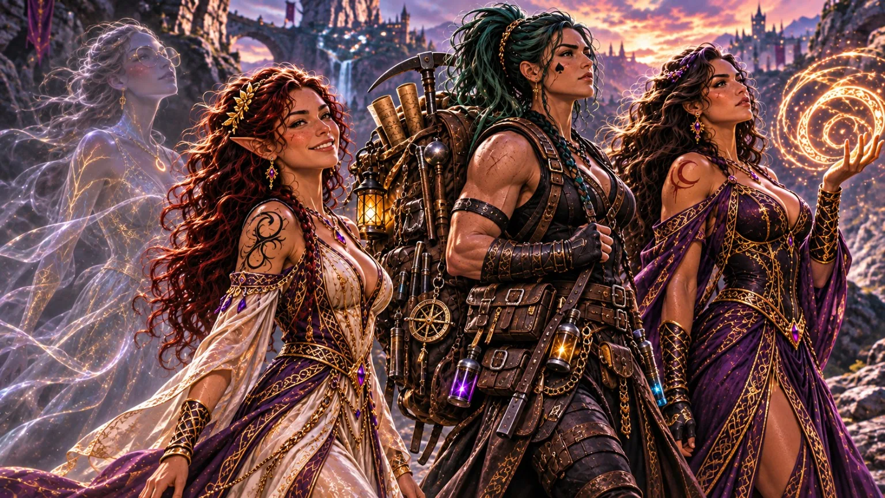
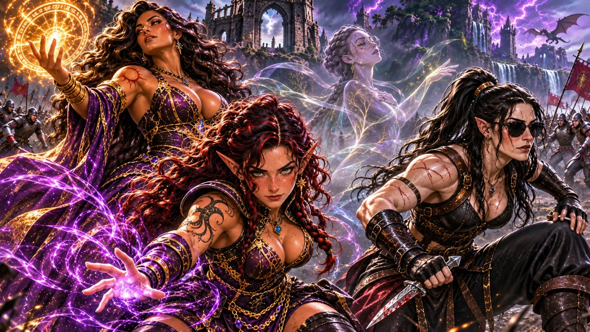
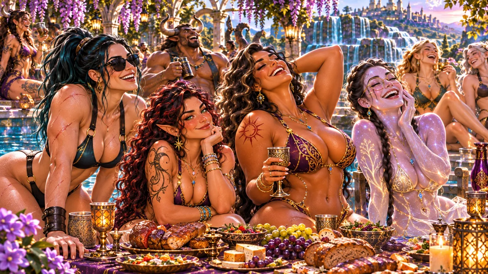
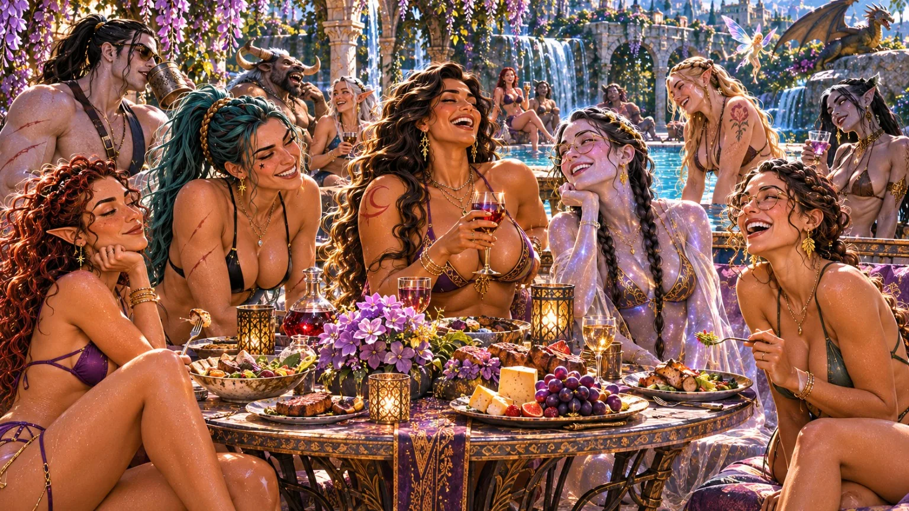
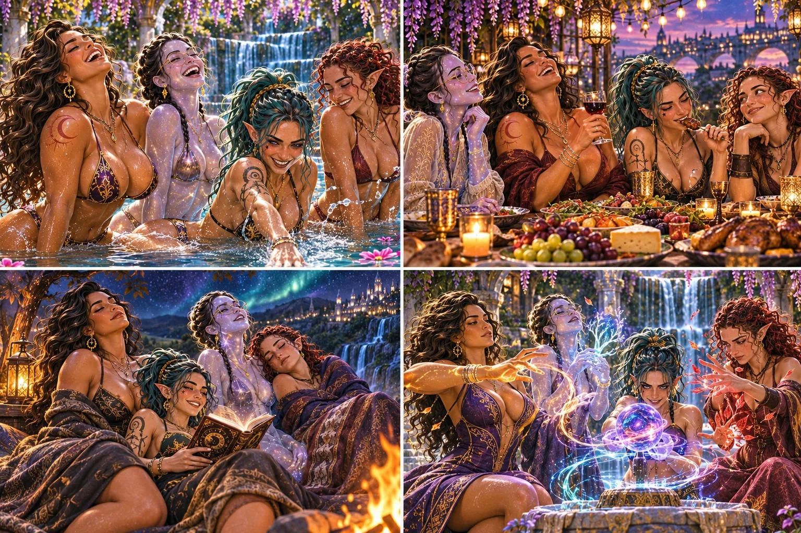
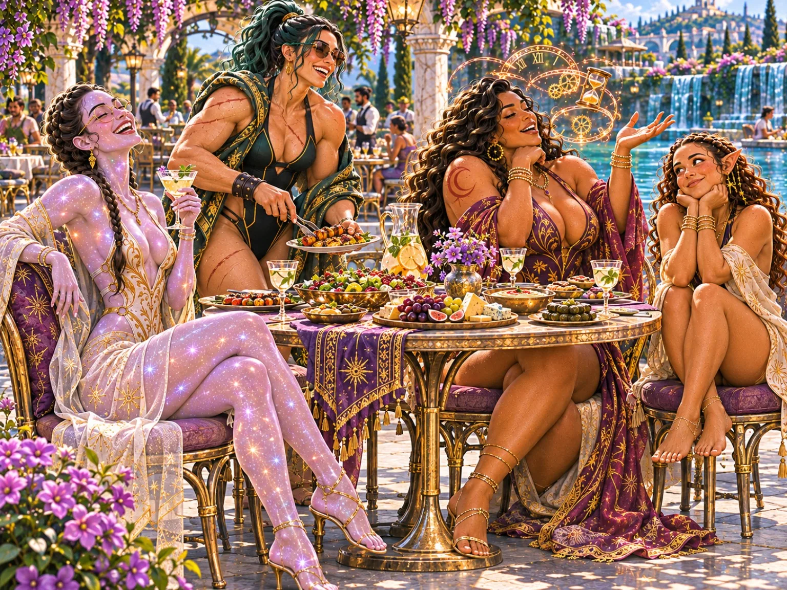
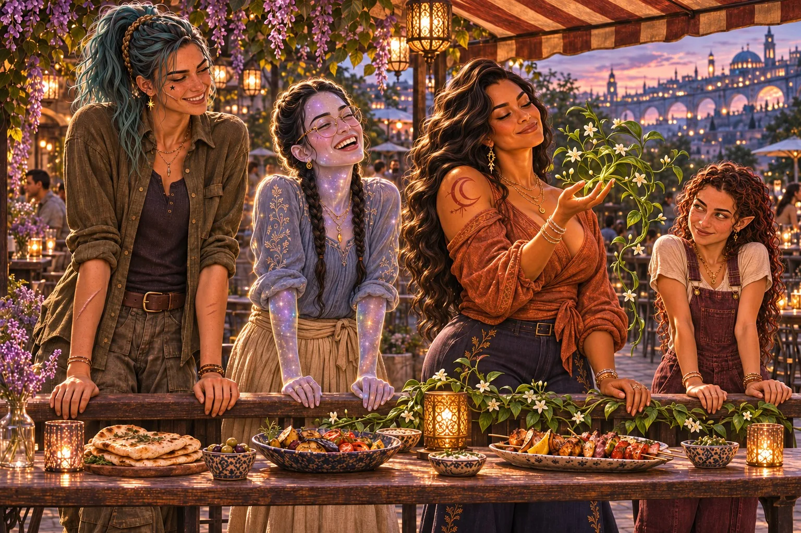
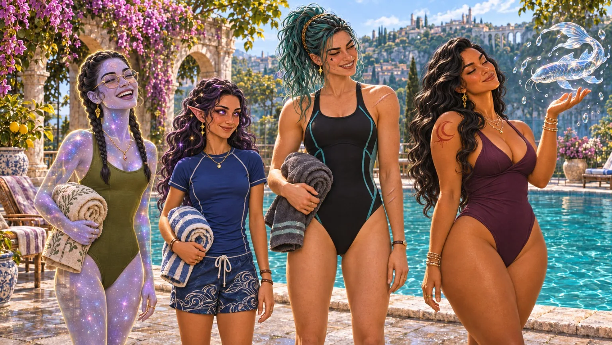

← Back to The Chronicles Shared Moments Selena, Plu, Reyla and Breni across their journeys, celebrations, quiet nights and adventures. Concept illustrations; the books remain the definitive source for the characters and their world.

The Journey Begins The four companions cross the enchanted highlands. A Quiet Night Selena, Plu, Breni and Reyla share a peaceful rest. 
The Battle The four face danger together, each with her own gifts. 
An Evening Together The companions enjoy a celebration among the peoples of the world. 
The Poolside Gathering An afternoon surrounded by friends and magical inhabitants. 
Four Moments A collection of shared experiences and changing expressions. 
A Garden Feast The companions dine in a garden of flowers and waterfalls. 
A Sunset Meal An informal evening with food, magic and laughter. 
Poolside Magic A relaxed day at the enchanted pool. Winter Skating The companions enjoy the snow and frozen lake.